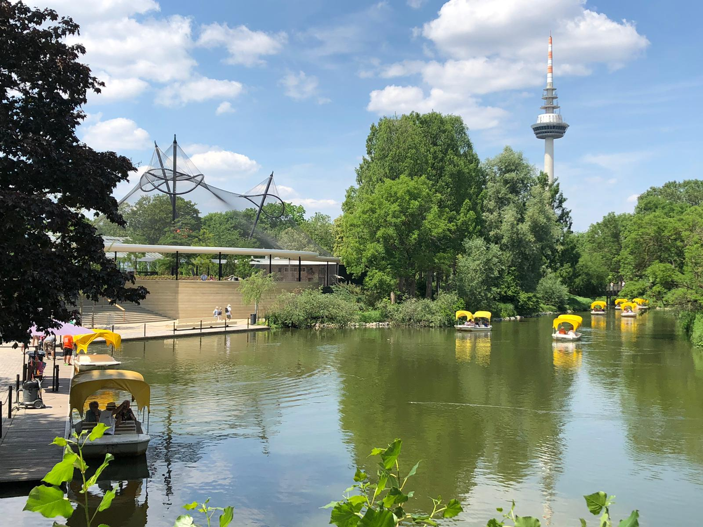
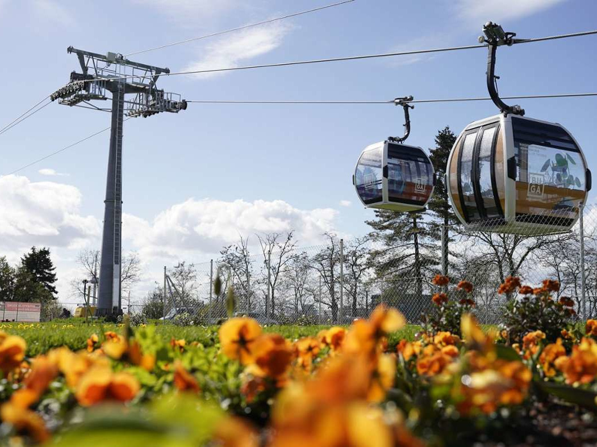
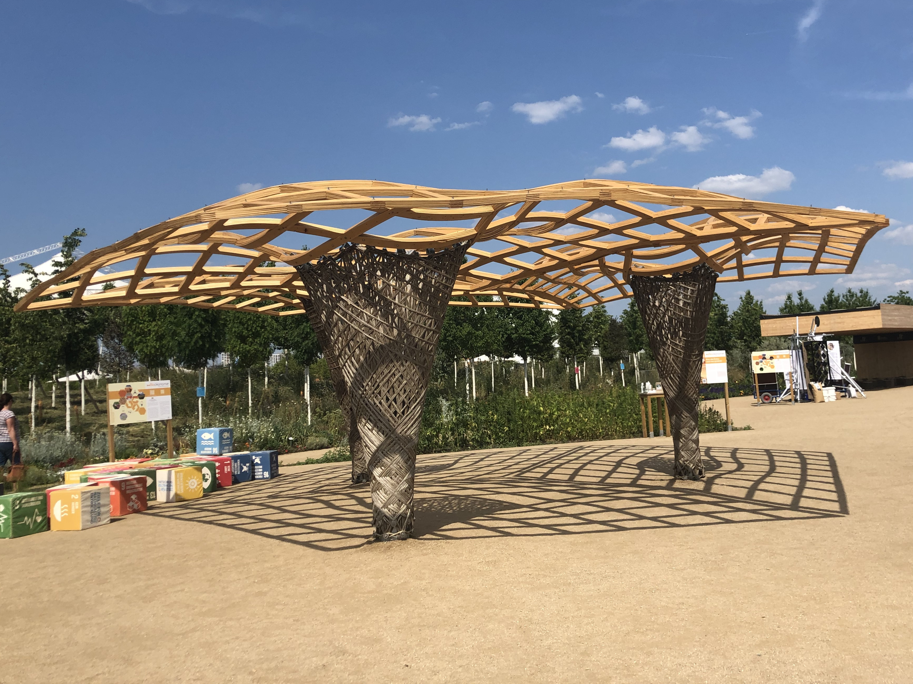
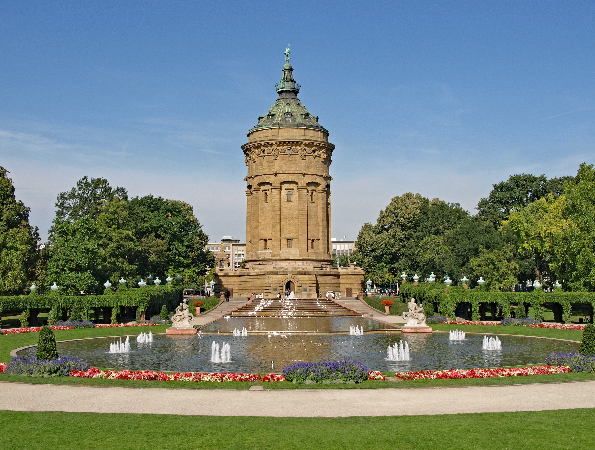
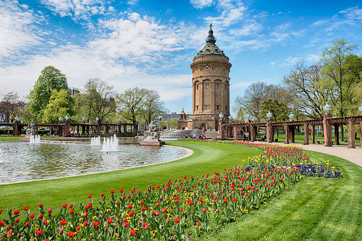
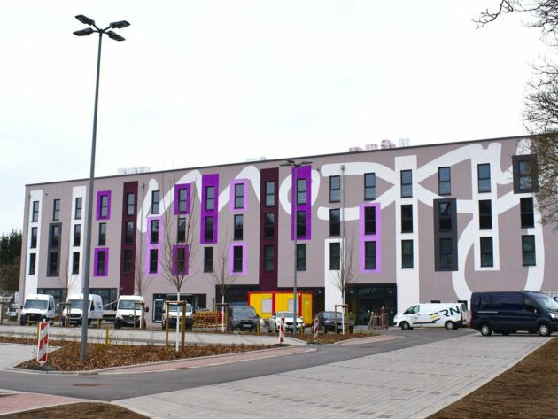
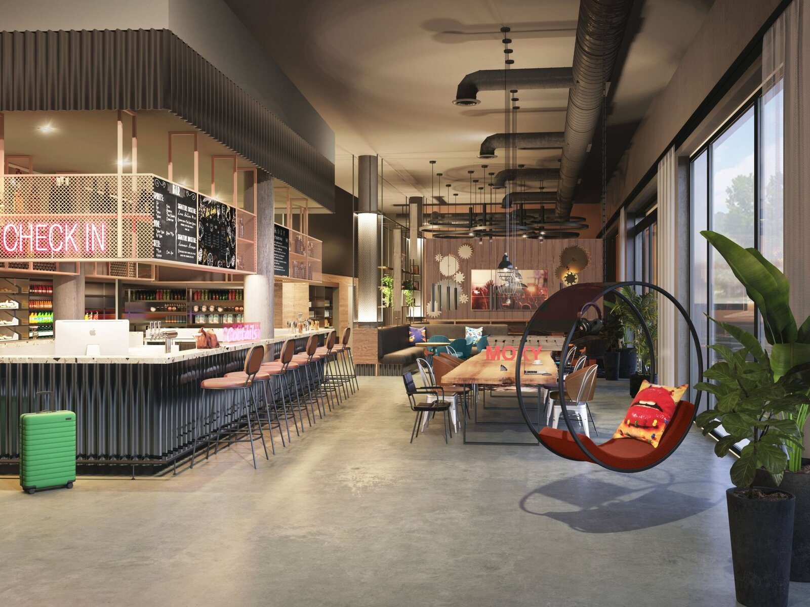
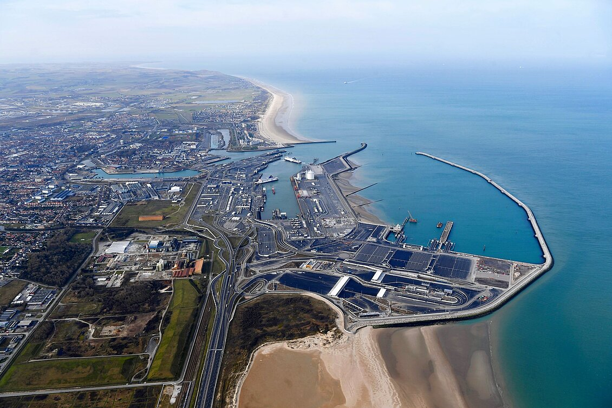
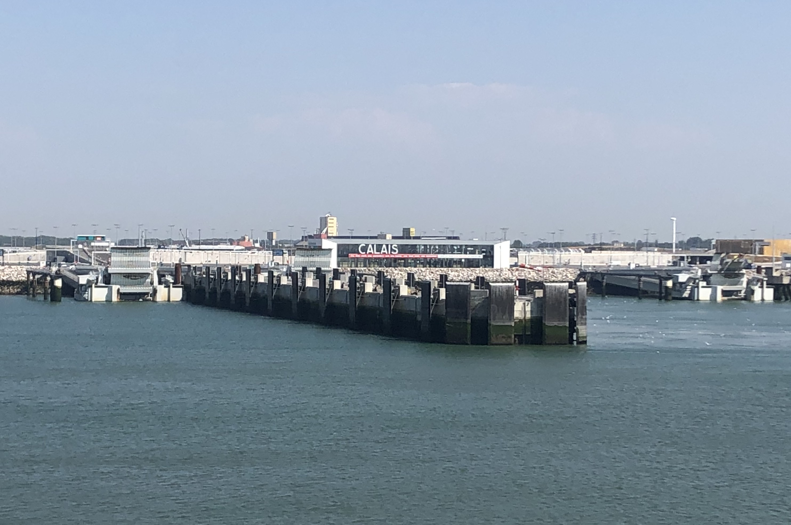
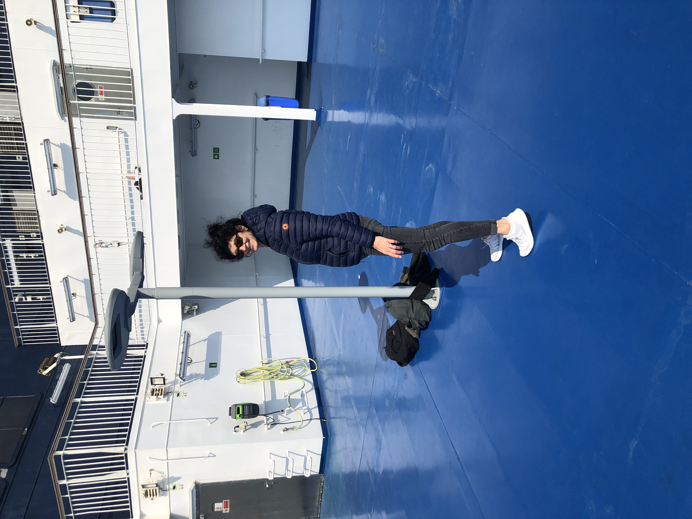

Die BUGA 2023 verwandelte das ehemalige Spinelli-Militärgelände dauerhaft in einen großen, frei zugänglichen Landschaftspark mit Freizeitflächen. Der Luisenpark wurde umfassend modernisiert und nachhaltig aufgewertet. Zudem entsteht auf dem Spinelli-Areal ein klimafreundliches neues Wohnviertel.





Moxy Simmern ist ein modernes Lifestyle-Hotel der Marke Marriott. Die Lobby dient gleichzeitig als Bar und Treffpunkt, das gesellige Ambiente ist ideal zum Plaudern und Entspannen.


Überfahrt mit der Fähre mit malerischer Aussicht auf das Meer, die Küste und die Kreidefelsen in Dover. Fahrzeit ca. 90 Minuten


